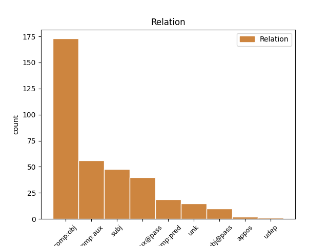
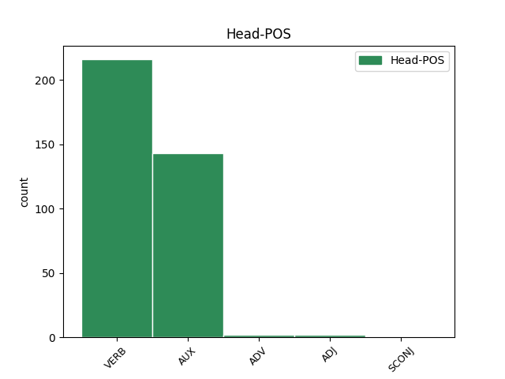
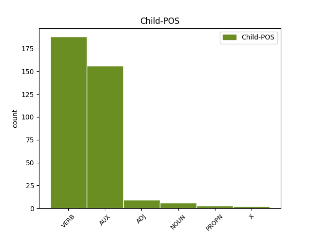

Distribution of features within this leaf



Agreement Rules sorted by frequency.
- When the dependent token is the direct object complements(comp:obj) of the head token, and the head token is VERB and the dependent token is VERB.
1 Lessing _ _ _ _ 0 _ _ _
2 betont betonen VERB VVFIN Mood=Ind|Number=Sing|Person=3|Tense=Pres|VerbForm=Fin 0 _ _ _
3 , _ _ _ _ 0 _ _ _
4 die _ _ _ _ 0 _ _ _
5 Poesie _ _ _ _ 0 _ _ _
6 ordne ordnen VERB VVFIN Mood=Sub|Number=Sing|Person=3|Tense=Pres|VerbForm=Fin 2 comp:obj _ _
7 Worte _ _ _ _ 0 _ _ _
8 " _ _ _ _ 0 _ _ _
9 aufeinander _ _ _ _ 0 _ _ _
10 folgend _ _ _ _ 0 _ _ _
11 " _ _ _ _ 0 _ _ _
12 ( _ _ _ _ 0 _ _ _
13 in _ _ _ _ 0 _ _ _
14 der _ _ _ _ 0 _ _ _
15 Zeit _ _ _ _ 0 _ _ _
16 ) _ _ _ _ 0 _ _ _
17 , _ _ _ _ 0 _ _ _
18 während _ _ _ _ 0 _ _ _
19 die _ _ _ _ 0 _ _ _
20 Malerei _ _ _ _ 0 _ _ _
21 durch _ _ _ _ 0 _ _ _
22 Farben _ _ _ _ 0 _ _ _
23 und _ _ _ _ 0 _ _ _
24 Formen _ _ _ _ 0 _ _ _
25 " _ _ _ _ 0 _ _ _
26 nebeneinander _ _ _ _ 0 _ _ _
27 " _ _ _ _ 0 _ _ _
28 ( _ _ _ _ 0 _ _ _
29 in _ _ _ _ 0 _ _ _
30 dem _ _ _ _ 0 _ _ _
31 Raum _ _ _ _ 0 _ _ _
32 ) _ _ _ _ 0 _ _ _
33 anordnet _ _ _ _ 0 _ _ _
34 . _ _ _ _ 0 _ _ _
1 Die _ _ _ _ 0 _ _ _
2 Beißkraft _ _ _ _ 0 _ _ _
3 , _ _ _ _ 0 _ _ _
4 auch _ _ _ _ 0 _ _ _
5 Bisskraft _ _ _ _ 0 _ _ _
6 genannt _ _ _ _ 0 _ _ _
7 , _ _ _ _ 0 _ _ _
8 gibt geben VERB VVFIN Mood=Ind|Number=Sing|Person=3|Tense=Pres|VerbForm=Fin 0 _ _ _
9 an _ _ _ _ 0 _ _ _
10 , _ _ _ _ 0 _ _ _
11 wie _ _ _ _ 0 _ _ _
12 hoch _ _ _ _ 0 _ _ _
13 die _ _ _ _ 0 _ _ _
14 Kraft _ _ _ _ 0 _ _ _
15 des _ _ _ _ 0 _ _ _
16 Kiefers _ _ _ _ 0 _ _ _
17 bei _ _ _ _ 0 _ _ _
18 einem _ _ _ _ 0 _ _ _
19 Biss _ _ _ _ 0 _ _ _
20 in _ _ _ _ 0 _ _ _
21 Newton _ _ _ _ 0 _ _ _
22 pro _ _ _ _ 0 _ _ _
23 Quadratzentimeter _ _ _ _ 0 _ _ _
24 ( _ _ _ _ 0 _ _ _
25 N _ _ _ _ 0 _ _ _
26 / _ _ _ _ 0 _ _ _
27 cm _ _ _ _ 0 _ _ _
28 ² _ _ _ _ 0 _ _ _
29 ) _ _ _ _ 0 _ _ _
30 ist sein AUX VAFIN Mood=Ind|Number=Sing|Person=3|Tense=Pres|VerbForm=Fin 8 comp:obj _ SpaceAfter=No
31 . _ _ _ _ 0 _ _ _
1 So _ _ _ _ 0 _ _ _
2 drückt _ _ _ _ 0 _ _ _
3 Günther _ _ _ _ 0 _ _ _
4 Patzig _ _ _ _ 0 _ _ _
5 eine _ _ _ _ 0 _ _ _
6 in _ _ _ _ 0 _ _ _
7 der _ _ _ _ 0 _ _ _
8 analytischen _ _ _ _ 0 _ _ _
9 Philosophie _ _ _ _ 0 _ _ _
10 weit _ _ _ _ 0 _ _ _
11 verbreitete _ _ _ _ 0 _ _ _
12 Ansicht _ _ _ _ 0 _ _ _
13 aus _ _ _ _ 0 _ _ _
14 , _ _ _ _ 0 _ _ _
15 dass _ _ _ _ 0 _ _ _
16 man _ _ _ _ 0 _ _ _
17 weder _ _ _ _ 0 _ _ _
18 den _ _ _ _ 0 _ _ _
19 allgemeinen _ _ _ _ 0 _ _ _
20 Begriff _ _ _ _ 0 _ _ _
21 der _ _ _ _ 0 _ _ _
22 Tatsache _ _ _ _ 0 _ _ _
23 definieren definieren VERB VVFIN Mood=Ind|Number=Plur|Person=3|Tense=Pres|VerbForm=Fin 28 comp:aux _ _
24 noch _ _ _ _ 0 _ _ _
25 einzelne _ _ _ _ 0 _ _ _
26 Tatsachen _ _ _ _ 0 _ _ _
27 identifizieren _ _ _ _ 0 _ _ _
28 könne können AUX VMFIN Mood=Sub|Number=Sing|Person=3|Tense=Pres|VerbForm=Fin 0 _ _ _
29 , _ _ _ _ 0 _ _ _
30 ohne _ _ _ _ 0 _ _ _
31 auf _ _ _ _ 0 _ _ _
32 Aussagen _ _ _ _ 0 _ _ _
33 zu _ _ _ _ 0 _ _ _
34 rekurrieren _ _ _ _ 0 _ _ _
35 . _ _ _ _ 0 _ _ _
1 Der _ _ _ _ 0 _ _ _
2 maximal _ _ _ _ 0 _ _ _
3 mögliche _ _ _ _ 0 _ _ _
4 Wirkungsgrad _ _ _ _ 0 _ _ _
5 ( _ _ _ _ 0 _ _ _
6 Carnotwirkungsgrad _ _ _ _ 0 _ _ _
7 ) _ _ _ _ 0 _ _ _
8 wird werden AUX VAFIN Mood=Ind|Number=Sing|Person=3|Tense=Pres|VerbForm=Fin|Voice=Pass 0 _ _ _
9 von _ _ _ _ 0 _ _ _
10 der _ _ _ _ 0 _ _ _
11 oberen _ _ _ _ 0 _ _ _
12 und _ _ _ _ 0 _ _ _
13 unteren _ _ _ _ 0 _ _ _
14 Arbeitsgastemperatur _ _ _ _ 0 _ _ _
15 begrenzt begrenzt VERB ADJD Mood=Ind|Number=Sing|Person=3|Tense=Pres|VerbForm=Fin 8 comp:aux@pass _ SpaceAfter=No
16 . _ _ _ _ 0 _ _ _
1 Die _ _ _ _ 0 _ _ _
2 Schreine _ _ _ _ 0 _ _ _
3 , _ _ _ _ 0 _ _ _
4 die _ _ _ _ 0 _ _ _
5 Vishnu _ _ _ _ 0 _ _ _
6 und _ _ _ _ 0 _ _ _
7 Brahma _ _ _ _ 0 _ _ _
8 gewidmet _ _ _ _ 0 _ _ _
9 sind _ _ _ _ 0 _ _ _
10 , _ _ _ _ 0 _ _ _
11 können können AUX VMFIN Mood=Ind|Number=Plur|Person=3|Tense=Pres|VerbForm=Fin 0 _ _ _
12 wieder _ _ _ _ 0 _ _ _
13 betreten _ _ _ _ 0 _ _ _
14 werden werden AUX VAINF Mood=Ind|Number=Plur|Person=3|Tense=Pres|VerbForm=Fin 11 comp:aux _ SpaceAfter=No
15 . _ _ _ _ 0 _ _ _
1 Das _ _ _ _ 0 _ _ _
2 Motto _ _ _ _ 0 _ _ _
3 des _ _ _ _ 0 _ _ _
4 Buches _ _ _ _ 0 _ _ _
5 , _ _ _ _ 0 _ _ _
6 " _ _ _ _ 0 _ _ _
7 Wo _ _ _ _ 0 _ _ _
8 wir _ _ _ _ 0 _ _ _
9 sind sein VERB VAFIN Mood=Ind|Number=Plur|Person=1|Tense=Pres|VerbForm=Fin 11 subj _ SpaceAfter=No
10 , _ _ _ _ 0 _ _ _
11 ist sein AUX VAFIN Mood=Ind|Number=Sing|Person=3|Tense=Pres|VerbForm=Fin 0 _ _ _
12 oben _ _ _ _ 0 _ _ _
13 " _ _ _ _ 0 _ _ _
14 , _ _ _ _ 0 _ _ _
15 wurde _ _ _ _ 0 _ _ _
16 in _ _ _ _ 0 _ _ _
17 späteren _ _ _ _ 0 _ _ _
18 Ausgaben _ _ _ _ 0 _ _ _
19 ersetzt _ _ _ _ 0 _ _ _
20 . _ _ _ _ 0 _ _ _
1 Wie _ _ _ _ 0 _ _ _
2 roh _ _ _ _ 0 _ _ _
3 Stanleys _ _ _ _ 0 _ _ _
4 Verhalten _ _ _ _ 0 _ _ _
5 auf _ _ _ _ 0 _ _ _
6 Blanche _ _ _ _ 0 _ _ _
7 wirkt wirken VERB VVFIN Mood=Ind|Number=Sing|Person=3|Tense=Pres|VerbForm=Fin 9 subj _ SpaceAfter=No
8 , _ _ _ _ 0 _ _ _
9 lässt lassen VERB VVFIN Mood=Ind|Number=Sing|Person=3|Tense=Pres|VerbForm=Fin 0 _ _ _
10 sich _ _ _ _ 0 _ _ _
11 daraus _ _ _ _ 0 _ _ _
12 ablesen _ _ _ _ 0 _ _ _
13 , _ _ _ _ 0 _ _ _
14 dass _ _ _ _ 0 _ _ _
15 sie _ _ _ _ 0 _ _ _
16 ihn _ _ _ _ 0 _ _ _
17 als _ _ _ _ 0 _ _ _
18 " _ _ _ _ 0 _ _ _
19 Überlebenden _ _ _ _ 0 _ _ _
20 der _ _ _ _ 0 _ _ _
21 Steinzeit _ _ _ _ 0 _ _ _
22 " _ _ _ _ 0 _ _ _
23 bezeichnet _ _ _ _ 0 _ _ _
24 . _ _ _ _ 0 _ _ _
1 Er _ _ _ _ 0 _ _ _
2 war sein VERB VAFIN Mood=Ind|Number=Sing|Person=3|Tense=Past|VerbForm=Fin 3 unk _ _
3 gehörte gehört VERB VVFIN Mood=Ind|Number=Sing|Person=3|Tense=Past|VerbForm=Fin 0 _ _ _
4 dem _ _ _ _ 0 _ _ _
5 Ritterstand _ _ _ _ 0 _ _ _
6 ( _ _ _ _ 0 _ _ _
7 miles _ _ _ _ 0 _ _ _
8 ) _ _ _ _ 0 _ _ _
9 an _ _ _ _ 0 _ _ _
10 . _ _ _ _ 0 _ _ _
1 Huck _ _ _ _ 0 _ _ _
2 und _ _ _ _ 0 _ _ _
3 Jim _ _ _ _ 0 _ _ _
4 machen _ _ _ _ 0 _ _ _
5 anfangs _ _ _ _ 0 _ _ _
6 mit _ _ _ _ 0 _ _ _
7 , _ _ _ _ 0 _ _ _
8 doch _ _ _ _ 0 _ _ _
9 dann _ _ _ _ 0 _ _ _
10 lassen lassen VERB VVFIN Mood=Ind|Number=Plur|Person=3|Tense=Pres|VerbForm=Fin 0 _ _ _
11 sie _ _ _ _ 0 _ _ _
12 den _ _ _ _ 0 _ _ _
13 Plan _ _ _ _ 0 _ _ _
14 auffliegen auffliegen VERB VVINF Mood=Ind|Number=Plur|Person=3|Tense=Pres|VerbForm=Fin 10 comp:pred _ SpaceAfter=No
15 . _ _ _ _ 0 _ _ _
1 Wie _ _ _ _ 0 _ _ _
2 sehr _ _ _ _ 0 _ _ _
3 sie _ _ _ _ 0 _ _ _
4 dem _ _ _ _ 0 _ _ _
5 Jungen _ _ _ _ 0 _ _ _
6 aber _ _ _ _ 0 _ _ _
7 fehlte _ _ _ _ 0 _ _ _
8 , _ _ _ _ 0 _ _ _
9 zeigt _ _ _ _ 0 _ _ _
10 sich _ _ _ _ 0 _ _ _
11 in _ _ _ _ 0 _ _ _
12 seiner _ _ _ _ 0 _ _ _
13 Geborgenheitssuche _ _ _ _ 0 _ _ _
14 in _ _ _ _ 0 _ _ _
15 der _ _ _ _ 0 _ _ _
16 Natur _ _ _ _ 0 _ _ _
17 , _ _ _ _ 0 _ _ _
18 aber _ _ _ _ 0 _ _ _
19 auch _ _ _ _ 0 _ _ _
20 an _ _ _ _ 0 _ _ _
21 dem _ _ _ _ 0 _ _ _
22 Tag _ _ _ _ 0 _ _ _
23 der _ _ _ _ 0 _ _ _
24 Aufnahme _ _ _ _ 0 _ _ _
25 in _ _ _ _ 0 _ _ _
26 das _ _ _ _ 0 _ _ _
27 Seminar _ _ _ _ 0 _ _ _
28 : _ _ _ _ 0 _ _ _
29 " _ _ _ _ 0 _ _ _
30 Wer _ _ _ _ 0 _ _ _
31 bei _ _ _ _ 0 _ _ _
32 dem _ _ _ _ 0 _ _ _
33 Eintritt _ _ _ _ 0 _ _ _
34 in _ _ _ _ 0 _ _ _
35 das _ _ _ _ 0 _ _ _
36 Klosterseminar _ _ _ _ 0 _ _ _
37 noch _ _ _ _ 0 _ _ _
38 eine _ _ _ _ 0 _ _ _
39 Mutter _ _ _ _ 0 _ _ _
40 gehabt _ _ _ _ 0 _ _ _
41 hat haben AUX VAFIN Mood=Ind|Number=Sing|Person=3|Tense=Pres|VerbForm=Fin 44 subj _ SpaceAfter=No
42 , _ _ _ _ 0 _ _ _
43 der _ _ _ _ 0 _ _ _
44 denkt denken VERB VVFIN Mood=Ind|Number=Sing|Person=3|Tense=Pres|VerbForm=Fin 0 _ _ _
45 zeitlebens _ _ _ _ 0 _ _ _
46 an _ _ _ _ 0 _ _ _
47 jene _ _ _ _ 0 _ _ _
48 Tage _ _ _ _ 0 _ _ _
49 mit _ _ _ _ 0 _ _ _
50 Dankbarkeit _ _ _ _ 0 _ _ _
51 und _ _ _ _ 0 _ _ _
52 lächelnder _ _ _ _ 0 _ _ _
53 Rührung _ _ _ _ 0 _ _ _
54 . _ _ _ _ 0 _ _ _
1 Seit _ _ _ _ 0 _ _ _
2 welchem _ _ _ _ 0 _ _ _
3 Jahr _ _ _ _ 0 _ _ _
4 der _ _ _ _ 0 _ _ _
5 Feldgottesdienst _ _ _ _ 0 _ _ _
6 der _ _ _ _ 0 _ _ _
7 Gemeinde _ _ _ _ 0 _ _ _
8 Sankt _ _ _ _ 0 _ _ _
9 Martin _ _ _ _ 0 _ _ _
10 in _ _ _ _ 0 _ _ _
11 Batzenhofen _ _ _ _ 0 _ _ _
12 zu _ _ _ _ 0 _ _ _
13 Mariä _ _ _ _ 0 _ _ _
14 Himmelfahrt _ _ _ _ 0 _ _ _
15 an _ _ _ _ 0 _ _ _
16 der _ _ _ _ 0 _ _ _
17 Kapelle _ _ _ _ 0 _ _ _
18 gehalten _ _ _ _ 0 _ _ _
19 wird werden AUX VAFIN Mood=Ind|Number=Sing|Person=3|Tense=Pres|VerbForm=Fin|Voice=Pass 21 subj _ SpaceAfter=No
20 , _ _ _ _ 0 _ _ _
21 ist sein AUX VAFIN Mood=Ind|Number=Sing|Person=3|Tense=Pres|VerbForm=Fin 0 _ _ _
22 nicht _ _ _ _ 0 _ _ _
23 überliefert _ _ _ _ 0 _ _ _
24 . _ _ _ _ 0 _ _ _
1 Ebenso _ _ _ _ 0 _ _ _
2 lassen lassen VERB VVFIN Mood=Ind|Number=Plur|Person=3|Tense=Pres|VerbForm=Fin 0 _ _ _
3 sich _ _ _ _ 0 _ _ _
4 der _ _ _ _ 0 _ _ _
5 Windows _ _ _ _ 0 _ _ _
6 Defender _ _ _ _ 0 _ _ _
7 und _ _ _ _ 0 _ _ _
8 der _ _ _ _ 0 _ _ _
9 Internet _ _ _ _ 0 _ _ _
10 Explorer _ _ _ _ 0 _ _ _
11 7 _ _ _ _ 0 _ _ _
12 unter _ _ _ _ 0 _ _ _
13 Windows _ _ _ _ 0 _ _ _
14 2000 _ _ _ _ 0 _ _ _
15 nicht _ _ _ _ 0 _ _ _
16 installieren _ _ _ _ 0 _ _ _
17 .. _ _ _ _ 0 _ _ _
18 NET _ _ _ _ 0 _ _ _
19 wird werden AUX VAFIN Mood=Ind|Number=Sing|Person=3|Tense=Pres|VerbForm=Fin|Voice=Pass 2 unk _ _
20 nur _ _ _ _ 0 _ _ _
21 bis _ _ _ _ 0 _ _ _
22 zu _ _ _ _ 0 _ _ _
23 der _ _ _ _ 0 _ _ _
24 Version _ _ _ _ 0 _ _ _
25 2.0 _ _ _ _ 0 _ _ _
26 für _ _ _ _ 0 _ _ _
27 Windows _ _ _ _ 0 _ _ _
28 2000 _ _ _ _ 0 _ _ _
29 unterstützt _ _ _ _ 0 _ _ _
30 . _ _ _ _ 0 _ _ _
1 Das _ _ _ _ 0 _ _ _
2 Ergebnis _ _ _ _ 0 _ _ _
3 einer _ _ _ _ 0 _ _ _
4 SWOT _ _ _ _ 0 _ _ _
5 - _ _ _ _ 0 _ _ _
6 Analyse _ _ _ _ 0 _ _ _
7 sei sein AUX VAFIN Mood=Sub|Number=Sing|Person=3|Tense=Pres|VerbForm=Fin 0 _ _ _
8 an _ _ _ _ 0 _ _ _
9 einem _ _ _ _ 0 _ _ _
10 Praxisbeispiel _ _ _ _ 0 _ _ _
11 ( _ _ _ _ 0 _ _ _
12 Volkswagen _ _ _ _ 0 _ _ _
13 ) _ _ _ _ 0 _ _ _
14 verdeutlicht verdeutlichen ADJ VVPP Mood=Ind|Number=Sing|Person=3|Tense=Pres|VerbForm=Fin 7 comp:pred _ SpaceAfter=No
15 . _ _ _ _ 0 _ _ _
1 der _ _ _ _ 0 _ _ _
2 hammer _ _ _ _ 0 _ _ _
3 sind sein AUX VAFIN Mood=Ind|Number=Plur|Person=3|Tense=Pres|VerbForm=Fin 0 _ _ _
4 jedoch _ _ _ _ 0 _ _ _
5 die _ _ _ _ 0 _ _ _
6 süssen _ _ _ _ 0 _ _ _
7 sachen sachen NOUN VVFIN Mood=Ind|Number=Plur|Person=3|Tense=Pres|VerbForm=Fin 3 subj _ _
8 an _ _ _ _ 0 _ _ _
9 dem _ _ _ _ 0 _ _ _
10 schluss _ _ _ _ 0 _ _ _
11 . _ _ _ _ 0 _ _ _
1 Bereits _ _ _ _ 0 _ _ _
2 ab _ _ _ _ 0 _ _ _
3 1802 _ _ _ _ 0 _ _ _
4 wurden werden X VAFIN Mood=Ind|Number=Plur|Person=3|Tense=Past|VerbForm=Fin|Voice=Pass 5 unk _ _
5 gab geben VERB VVFIN Mood=Ind|Number=Sing|Person=3|Tense=Past|VerbForm=Fin 0 _ _ _
6 es _ _ _ _ 0 _ _ _
7 württembergische _ _ _ _ 0 _ _ _
8 Militärangehörigen _ _ _ _ 0 _ _ _
9 in _ _ _ _ 0 _ _ _
10 Rottweil _ _ _ _ 0 _ _ _
11 , _ _ _ _ 0 _ _ _
12 die _ _ _ _ 0 _ _ _
13 von _ _ _ _ 0 _ _ _
14 Flözlingen _ _ _ _ 0 _ _ _
15 aus _ _ _ _ 0 _ _ _
16 versorgt _ _ _ _ 0 _ _ _
17 wurden _ _ _ _ 0 _ _ _
18 . _ _ _ _ 0 _ _ _
1 Mein _ _ _ _ 0 _ _ _
2 Schatz _ _ _ _ 0 _ _ _
3 ist sein PROPN VAFIN Mood=Ind|Number=Sing|Person=3|Tense=Pres|VerbForm=Fin 6 subj _ _
4 aus _ _ _ _ 0 _ _ _
5 Tirol _ _ _ _ 0 _ _ _
6 ist sein AUX VAFIN Mood=Ind|Number=Sing|Person=3|Tense=Pres|VerbForm=Fin 0 _ _ _
7 ein _ _ _ _ 0 _ _ _
8 deutscher _ _ _ _ 0 _ _ _
9 Heimat _ _ _ _ 0 _ _ _
10 - _ _ _ _ 0 _ _ _
11 und _ _ _ _ 0 _ _ _
12 Schlagerfilm _ _ _ _ 0 _ _ _
13 von _ _ _ _ 0 _ _ _
14 Hans _ _ _ _ 0 _ _ _
15 Quest _ _ _ _ 0 _ _ _
16 aus _ _ _ _ 0 _ _ _
17 dem _ _ _ _ 0 _ _ _
18 Jahr _ _ _ _ 0 _ _ _
19 1958 _ _ _ _ 0 _ _ _
20 . _ _ _ _ 0 _ _ _
1 Eine _ _ _ _ 0 _ _ _
2 Werkstatt _ _ _ _ 0 _ _ _
3 in _ _ _ _ 0 _ _ _
4 der _ _ _ _ 0 _ _ _
5 einem _ _ _ _ 0 _ _ _
6 nichts _ _ _ _ 0 _ _ _
7 aufgeschwätzt _ _ _ _ 0 _ _ _
8 wird _ _ _ _ 0 _ _ _
9 , _ _ _ _ 0 _ _ _
10 sonden Sonde SCONJ VVFIN Mood=Sub|Number=Plur|Person=3|Tense=Pres|VerbForm=Fin 0 _ _ _
11 nur _ _ _ _ 0 _ _ _
12 das _ _ _ _ 0 _ _ _
13 repariert _ _ _ _ 0 _ _ _
14 wird werden AUX VAFIN Mood=Ind|Number=Sing|Person=3|Tense=Pres|VerbForm=Fin|Voice=Pass 10 comp:obj _ _
15 was _ _ _ _ 0 _ _ _
16 kaputt _ _ _ _ 0 _ _ _
17 ist _ _ _ _ 0 _ _ _
18 . _ _ _ _ 0 _ _ _
1 Ich _ _ _ _ 0 _ _ _
2 hoffe _ _ _ _ 0 _ _ _
3 es _ _ _ _ 0 _ _ _
4 bleibt bleiben VERB VVFIN Mood=Ind|Number=Sing|Person=3|Tense=Pres|VerbForm=Fin 0 _ _ _
5 ihnen _ _ _ _ 0 _ _ _
6 durch _ _ _ _ 0 _ _ _
7 meine _ _ _ _ 0 _ _ _
8 Beurteilung _ _ _ _ 0 _ _ _
9 unnötiger _ _ _ _ 0 _ _ _
10 Stress _ _ _ _ 0 _ _ _
11 und _ _ _ _ 0 _ _ _
12 Ärger _ _ _ _ 0 _ _ _
13 erspart ersparen ADJ VVFIN Mood=Ind|Number=Sing|Person=3|Tense=Pres|VerbForm=Fin 4 comp:pred _ SpaceAfter=No
14 . _ _ _ _ 0 _ _ _
1 Du _ _ _ _ 0 _ _ _
2 bist sein AUX VAFIN Mood=Ind|Number=Sing|Person=2|Tense=Pres|VerbForm=Fin 0 _ _ _
3 nicht _ _ _ _ 0 _ _ _
4 , _ _ _ _ 0 _ _ _
5 was _ _ _ _ 0 _ _ _
6 Du _ _ _ _ 0 _ _ _
7 ISST ISST VERB VVFIN Mood=Ind|Number=Sing|Person=2|Tense=Pres|VerbForm=Fin 2 comp:pred _ _
8 -- _ _ _ _ 0 _ _ _
9 sondern _ _ _ _ 0 _ _ _
10 was _ _ _ _ 0 _ _ _
11 Du _ _ _ _ 0 _ _ _
12 DENKST _ _ _ _ 0 _ _ _
13 ! _ _ _ _ 0 _ _ _
1 Abswurmbachit _ _ _ _ 0 _ _ _
2 bildet bilden VERB VVFIN Mood=Ind|Number=Sing|Person=3|Tense=Pres|VerbForm=Fin 0 _ _ _
3 sich _ _ _ _ 0 _ _ _
4 zusammen _ _ _ _ 0 _ _ _
5 mit _ _ _ _ 0 _ _ _
6 Braunit _ _ _ _ 0 _ _ _
7 in _ _ _ _ 0 _ _ _
8 mangan _ _ _ _ 0 _ _ _
9 - _ _ _ _ 0 _ _ _
10 und _ _ _ _ 0 _ _ _
11 aluminiumhaltigen _ _ _ _ 0 _ _ _
12 Piemontit _ _ _ _ 0 _ _ _
13 - _ _ _ _ 0 _ _ _
14 Sursassit _ _ _ _ 0 _ _ _
15 - _ _ _ _ 0 _ _ _
16 Quarziten _ _ _ _ 0 _ _ _
17 bei _ _ _ _ 0 _ _ _
18 Drücken _ _ _ _ 0 _ _ _
19 von _ _ _ _ 0 _ _ _
20 7-11 _ _ _ _ 0 _ _ _
21 kbar _ _ _ _ 0 _ _ _
22 und _ _ _ _ 0 _ _ _
23 Temperaturen _ _ _ _ 0 _ _ _
24 von _ _ _ _ 0 _ _ _
25 300-420 _ _ _ _ 0 _ _ _
26 ° _ _ _ _ 0 _ _ _
27 C. _ _ _ _ 0 _ _ _
28 Weitere _ _ _ _ 0 _ _ _
29 Begleitminerale _ _ _ _ 0 _ _ _
30 sind sein AUX VAFIN Mood=Ind|Number=Plur|Person=3|Tense=Pres|VerbForm=Fin 2 udep _ _
31 unter _ _ _ _ 0 _ _ _
32 anderem _ _ _ _ 0 _ _ _
33 Ardennit _ _ _ _ 0 _ _ _
34 , _ _ _ _ 0 _ _ _
35 Hollandit _ _ _ _ 0 _ _ _
36 , _ _ _ _ 0 _ _ _
37 Klinochlor _ _ _ _ 0 _ _ _
38 , _ _ _ _ 0 _ _ _
39 Quarz _ _ _ _ 0 _ _ _
40 , _ _ _ _ 0 _ _ _
41 Rutil _ _ _ _ 0 _ _ _
42 und _ _ _ _ 0 _ _ _
43 Shattuckit _ _ _ _ 0 _ _ _
44 . _ _ _ _ 0 _ _ _
1 Die _ _ _ _ 0 _ _ _
2 Umstände _ _ _ _ 0 _ _ _
3 von _ _ _ _ 0 _ _ _
4 Peters _ _ _ _ 0 _ _ _
5 Besetzung _ _ _ _ 0 _ _ _
6 scheinen scheinen VERB VVFIN Mood=Ind|Number=Plur|Person=3|Tense=Pres|VerbForm=Fin 0 _ _ _
7 dabei _ _ _ _ 0 _ _ _
8 keine _ _ _ _ 0 _ _ _
9 Auswirkungen _ _ _ _ 0 _ _ _
10 auf _ _ _ _ 0 _ _ _
11 die _ _ _ _ 0 _ _ _
12 Zusammenarbeit _ _ _ _ 0 _ _ _
13 der _ _ _ _ 0 _ _ _
14 beiden _ _ _ _ 0 _ _ _
15 Männer _ _ _ _ 0 _ _ _
16 gehabt _ _ _ _ 0 _ _ _
17 haben haben AUX VAFIN Mood=Ind|Number=Plur|Person=3|Tense=Pres|VerbForm=Fin 6 comp:pred _ SpaceAfter=No
18 : _ _ _ _ 0 _ _ _
19 Als _ _ _ _ 0 _ _ _
20 Peter _ _ _ _ 0 _ _ _
21 1298 _ _ _ _ 0 _ _ _
22 noch _ _ _ _ 0 _ _ _
23 die _ _ _ _ 0 _ _ _
24 Kanzlerschaft _ _ _ _ 0 _ _ _
25 des _ _ _ _ 0 _ _ _
26 Königreich _ _ _ _ 0 _ _ _
27 Böhmens _ _ _ _ 0 _ _ _
28 übernahm _ _ _ _ 0 _ _ _
29 und _ _ _ _ 0 _ _ _
30 deswegen _ _ _ _ 0 _ _ _
31 die _ _ _ _ 0 _ _ _
32 Diözese _ _ _ _ 0 _ _ _
33 für _ _ _ _ 0 _ _ _
34 längere _ _ _ _ 0 _ _ _
35 Zeit _ _ _ _ 0 _ _ _
36 verlassen _ _ _ _ 0 _ _ _
37 musste _ _ _ _ 0 _ _ _
38 , _ _ _ _ 0 _ _ _
39 betraute _ _ _ _ 0 _ _ _
40 er _ _ _ _ 0 _ _ _
41 für _ _ _ _ 0 _ _ _
42 die _ _ _ _ 0 _ _ _
43 Zeit _ _ _ _ 0 _ _ _
44 seiner _ _ _ _ 0 _ _ _
45 Abwesenheit _ _ _ _ 0 _ _ _
46 Lüthold _ _ _ _ 0 _ _ _
47 mit _ _ _ _ 0 _ _ _
48 der _ _ _ _ 0 _ _ _
49 Verwaltung _ _ _ _ 0 _ _ _
50 des _ _ _ _ 0 _ _ _
51 Bistums _ _ _ _ 0 _ _ _
52 . _ _ _ _ 0 _ _ _
1 Er _ _ _ _ 0 _ _ _
2 hilft _ _ _ _ 0 _ _ _
3 Kyo _ _ _ _ 0 _ _ _
4 , _ _ _ _ 0 _ _ _
5 eine _ _ _ _ 0 _ _ _
6 Ladung _ _ _ _ 0 _ _ _
7 Schusswaffen _ _ _ _ 0 _ _ _
8 abzuzweigen _ _ _ _ 0 _ _ _
9 , _ _ _ _ 0 _ _ _
10 und _ _ _ _ 0 _ _ _
11 ihm _ _ _ _ 0 _ _ _
12 wird werden AUX VAFIN Mood=Ind|Number=Sing|Person=3|Tense=Pres|VerbForm=Fin|Voice=Pass 0 _ _ _
13 später _ _ _ _ 0 _ _ _
14 mit _ _ _ _ 0 _ _ _
15 gesagt _ _ _ _ 0 _ _ _
16 , _ _ _ _ 0 _ _ _
17 sein _ _ _ _ 0 _ _ _
18 Leben _ _ _ _ 0 _ _ _
19 sei sein VERB VAFIN Mood=Sub|Number=Sing|Person=3|Tense=Pres|VerbForm=Fin 12 subj@pass _ _
20 in _ _ _ _ 0 _ _ _
21 Gefahr _ _ _ _ 0 _ _ _
22 , _ _ _ _ 0 _ _ _
23 wenn _ _ _ _ 0 _ _ _
24 er _ _ _ _ 0 _ _ _
25 nicht _ _ _ _ 0 _ _ _
26 binnen _ _ _ _ 0 _ _ _
27 48 _ _ _ _ 0 _ _ _
28 Stunden _ _ _ _ 0 _ _ _
29 die _ _ _ _ 0 _ _ _
30 Stadt _ _ _ _ 0 _ _ _
31 verlasse _ _ _ _ 0 _ _ _
32 . _ _ _ _ 0 _ _ _
1 Es _ _ _ _ 0 _ _ _
2 wird werden AUX VAFIN Mood=Ind|Number=Sing|Person=3|Tense=Pres|VerbForm=Fin|Voice=Pass 0 _ _ _
3 wird werden AUX VAFIN Mood=Ind|Number=Sing|Person=3|Tense=Pres|VerbForm=Fin 2 comp:aux@pass _ _
4 der _ _ _ _ 0 _ _ _
5 Tarif _ _ _ _ 0 _ _ _
6 des _ _ _ _ 0 _ _ _
7 Münchner _ _ _ _ 0 _ _ _
8 Verkehrs _ _ _ _ 0 _ _ _
9 - _ _ _ _ 0 _ _ _
10 und _ _ _ _ 0 _ _ _
11 Tarifverbunds _ _ _ _ 0 _ _ _
12 angewendet _ _ _ _ 0 _ _ _
13 . _ _ _ _ 0 _ _ _
1 Jahrhundert Jahrhundert NOUN VVFIN Mood=Ind|Number=Sing|Person=3|Tense=Pres|VerbForm=Fin 10 unk _ _
2 das _ _ _ _ 0 _ _ _
3 Schuldprinzip _ _ _ _ 0 _ _ _
4 auch _ _ _ _ 0 _ _ _
5 in _ _ _ _ 0 _ _ _
6 dem _ _ _ _ 0 _ _ _
7 weltlichen _ _ _ _ 0 _ _ _
8 Strafrecht _ _ _ _ 0 _ _ _
9 durchzusetzen _ _ _ _ 0 _ _ _
10 beginnt beginnen VERB VVFIN Mood=Ind|Number=Sing|Person=3|Tense=Pres|VerbForm=Fin 0 _ _ _
11 . _ _ _ _ 0 _ _ _
1 Es _ _ _ _ 0 _ _ _
2 müsse müssen AUX VMFIN Mood=Sub|Number=Sing|Person=3|Tense=Pres|VerbForm=Fin 0 _ _ _
3 gezeigt _ _ _ _ 0 _ _ _
4 werden _ _ _ _ 0 _ _ _
5 , _ _ _ _ 0 _ _ _
6 wie _ _ _ _ 0 _ _ _
7 der _ _ _ _ 0 _ _ _
8 Zukunftsstaat _ _ _ _ 0 _ _ _
9 aussehen _ _ _ _ 0 _ _ _
10 und _ _ _ _ 0 _ _ _
11 auf _ _ _ _ 0 _ _ _
12 welchem _ _ _ _ 0 _ _ _
13 Weg _ _ _ _ 0 _ _ _
14 man _ _ _ _ 0 _ _ _
15 ihn _ _ _ _ 0 _ _ _
16 erreichen _ _ _ _ 0 _ _ _
17 könne können AUX VMFIN Mood=Sub|Number=Sing|Person=3|Tense=Pres|VerbForm=Fin 2 subj@pass _ SpaceAfter=No
18 . _ _ _ _ 0 _ _ _
Disagree Examples:
1 Sie _ _ _ _ 0 _ _ _
2 polterte poltern VERB VVFIN Mood=Ind|Number=Sing|Person=3|Tense=Past|VerbForm=Fin 0 _ _ _
3 los _ _ _ _ 0 _ _ _
4 : _ _ _ _ 0 _ _ _
5 " _ _ _ _ 0 _ _ _
6 Da _ _ _ _ 0 _ _ _
7 müssen müssen AUX VMFIN Mood=Ind|Number=Plur|Person=3|Tense=Pres|VerbForm=Fin 2 comp:obj _ _
8 Sie _ _ _ _ 0 _ _ _
9 dahin _ _ _ _ 0 _ _ _
10 gehen _ _ _ _ 0 _ _ _
11 , _ _ _ _ 0 _ _ _
12 wo _ _ _ _ 0 _ _ _
13 sie _ _ _ _ 0 _ _ _
14 die _ _ _ _ 0 _ _ _
15 Linsen _ _ _ _ 0 _ _ _
16 gekauft _ _ _ _ 0 _ _ _
17 haben _ _ _ _ 0 _ _ _
18 ! _ _ _ _ 0 _ _ _
1 Sie _ _ _ _ 0 _ _ _
2 hat _ _ _ _ 0 _ _ _
3 mir _ _ _ _ 0 _ _ _
4 zu _ _ _ _ 0 _ _ _
5 meinem _ _ _ _ 0 _ _ _
6 Recht _ _ _ _ 0 _ _ _
7 geholfen _ _ _ _ 0 _ _ _
8 , _ _ _ _ 0 _ _ _
9 als _ _ _ _ 0 _ _ _
10 ich _ _ _ _ 0 _ _ _
11 probleme probleme ADJ VVFIN Mood=Ind|Number=Sing|Person=1|Tense=Pres|VerbForm=Fin 15 comp:obj _ _
12 mit _ _ _ _ 0 _ _ _
13 einer _ _ _ _ 0 _ _ _
14 Bank _ _ _ _ 0 _ _ _
15 hatte haben VERB VAFIN Mood=Ind|Number=Sing|Person=3|Tense=Past|VerbForm=Fin 0 _ _ _
16 . _ _ _ _ 0 _ _ _
1 Bedienung _ _ _ _ 0 _ _ _
2 etwas _ _ _ _ 0 _ _ _
3 gestresst gestresst ADJ VVFIN Mood=Ind|Number=Sing|Person=3|Tense=Pres|VerbForm=Fin 0 _ _ _
4 , _ _ _ _ 0 _ _ _
5 versuchte versuchen VERB VVFIN Mood=Ind|Number=Sing|Person=3|Tense=Past|VerbForm=Fin 3 appos _ _
6 aber _ _ _ _ 0 _ _ _
7 nett _ _ _ _ 0 _ _ _
8 zu _ _ _ _ 0 _ _ _
9 sein _ _ _ _ 0 _ _ _
10 . _ _ _ _ 0 _ _ _
1 Wenn _ _ _ _ 0 _ _ _
2 man _ _ _ _ 0 _ _ _
3 bis _ _ _ _ 0 _ _ _
4 20h _ _ _ _ 0 _ _ _
5 offen _ _ _ _ 0 _ _ _
6 hat _ _ _ _ 0 _ _ _
7 , _ _ _ _ 0 _ _ _
8 sollten sollen AUX VMFIN Mood=Sub|Number=Plur|Person=3|Tense=Past|VerbForm=Fin 0 _ _ _
9 Kunden _ _ _ _ 0 _ _ _
10 , _ _ _ _ 0 _ _ _
11 die _ _ _ _ 0 _ _ _
12 um _ _ _ _ 0 _ _ _
13 17 _ _ _ _ 0 _ _ _
14 Uhr _ _ _ _ 0 _ _ _
15 vorbeikommen _ _ _ _ 0 _ _ _
16 , _ _ _ _ 0 _ _ _
17 doch _ _ _ _ 0 _ _ _
18 noch _ _ _ _ 0 _ _ _
19 eine _ _ _ _ 0 _ _ _
20 Chance _ _ _ _ 0 _ _ _
21 haben haben AUX VAFIN Mood=Ind|Number=Plur|Person=3|Tense=Pres|VerbForm=Fin 8 comp:aux _ SpaceAfter=No
22 ... _ _ _ _ 0 _ _ _
1 als _ _ _ _ 0 _ _ _
2 die _ _ _ _ 0 _ _ _
3 billige _ _ _ _ 0 _ _ _
4 fertigsauce _ _ _ _ 0 _ _ _
5 auf _ _ _ _ 0 _ _ _
6 den _ _ _ _ 0 _ _ _
7 tisch _ _ _ _ 0 _ _ _
8 kam _ _ _ _ 0 _ _ _
9 , _ _ _ _ 0 _ _ _
10 dachte denken VERB VVFIN Mood=Ind|Number=Sing|Person=1|Tense=Past|VerbForm=Fin 0 _ _ _
11 ich _ _ _ _ 0 _ _ _
12 erst _ _ _ _ 0 _ _ _
13 , _ _ _ _ 0 _ _ _
14 das _ _ _ _ 0 _ _ _
15 wird werden VERB VAFIN Mood=Ind|Number=Sing|Person=3|Tense=Pres|VerbForm=Fin 10 comp:obj _ _
16 nix _ _ _ _ 0 _ _ _
17 . _ _ _ _ 0 _ _ _